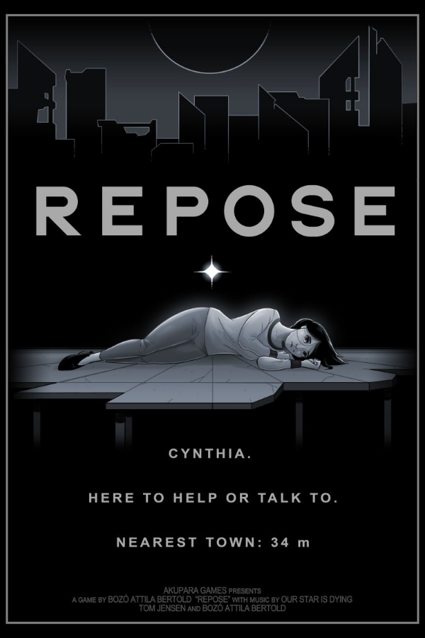

Repose
Every archived year-end list appearance, including placement and points earned.
About the Game
Features• Every Step Counts - Make considered decisions, each step, shot and trap you set off drains your limited energy• Outwit, Outfight - Use your light to find them, your axe to kill them. • Fail Forward - Wake up. It was a bad dream. Your achievements persist through death• Investigate the Facility - Explore increasingly confusing and surreal areas as you make your way to the bottom• For Emergencies Only - The handgun is just in case. [The company] says you probably won't need it. It can't be that dangerous, right? About the GameAre you sleeping on the job again?It's your first day at [the company.] You've been tasked with recovering damaged oxygen tanks scattered throughout the facility. Don't ask what they're for. Don't ask where they came from. Aaron used to do the same job. Don't ask about Aaron. Focus on Cynthia: She's kind to you, isn't she? Doesn't she care?Is anything on the dead internet worth saving?Every frame of REPOSE is meticulously hand-crafted pixel art. The atmosphere assembled with sharp focus on every detail. Every moment of gameplay methodically built to maximize tension and intrigue. What is this place? The facility just keeps going down and down. Are you going to find any answers once you reach the bottom?
| Released | 2025-04-14 |
|---|---|
| Developer | Bozó Attila Bertold |
| Publisher | Akupara Games |
| Genres | Action, Adventure, Indie |
| Platforms | PC |
SingleplayerSteam AchievementsFull controller supportFirst-Person2DSci-fiHorrorExplorationAction-AdventurePixel GraphicsControllerDark
Game information provided by RAWG.
Points by Year
List History
| Year | Source | List | Placement | Points |
|---|---|---|---|---|
| 2025 | NPR | The best games of 2025, picked by NPR's staff | Unranked | 1 |